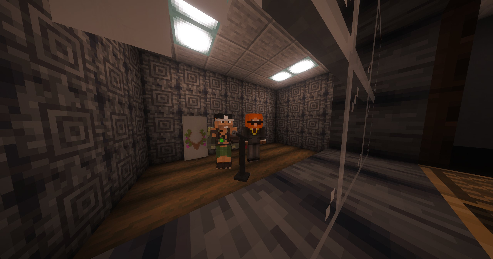

PlayTwo Records ouvre ses portes : un label qui veut faire entendre toutes les voix
Un nouveau label musical vient de naître sur le territoire. Nous avons rencontré l'équipe de PlayTwo Records, qui nous a présenté un projet ambitieux, ouvert à tous les talents — et déjà marqué par la signature de Blockba, venu tout droit du royaume des elfes.

Pour parler de l'ouverture de PlayTwo Records, nous avons rencontré l'équipe du label, qui nous a présenté un projet ambitieux, ouvert à tous les talents, et déjà marqué par la signature de Blockba, venu tout droit du royaume des elfes.
PlayTwo Records — L'objectif est simple : accepter tout le monde. On veut offrir une chance aux artistes qui ont quelque chose à dire, quel que soit leur style ou leur origine. Le label est là pour repérer, accompagner et faire grandir les talents.
PlayTwo Records — Blockba nous a tout de suite parlé. Il a une identité forte, une vraie direction artistique, et une énergie qui sort du lot. C'est le premier artiste signé du label, et on est très heureux de l'accueillir.
PlayTwo Records — Les artistes sont rémunérés en fonction de l'audience de leur musique. Plus leurs sons circulent, plus ils touchent. On veut un système qui récompense la visibilité, l'engagement et l'impact réel des morceaux.
PlayTwo Records — On veut faire circuler les sons partout où ils peuvent vivre : dans les boîtes de nuit, dans les soirées karaoké, et dans tous les lieux où la musique peut rassembler les gens. L'idée, c'est que les morceaux ne restent pas enfermés dans un coin, mais qu'ils existent dans la vie de tous les jours.
PlayTwo Records — Oui. Le premier son de Blockba, "Garden", est d'ores et déjà disponible. C'est une première sortie importante pour le label, et on espère qu'elle marquera le début d'une belle aventure.
PlayTwo Records — Non, on veut proposer à la fois une diffusion sur YouTube et une vente physique. On tient à garder un lien concret avec le public, tout en laissant les artistes toucher une audience plus large en ligne.
PlayTwo Records se présente donc comme un label ouvert, souple et tourné vers la diffusion réelle des morceaux. Entre signature prometteuse, rémunération à l'audience et volonté de faire vivre la musique dans les lieux de fête, le projet affiche déjà une identité claire. Et avec "Garden" déjà disponible, le public peut dès maintenant découvrir la première pierre de cette aventure musicale.
"Un bon label ne se contente pas de produire des sons. Il leur donne une scène."
— La Rédaction